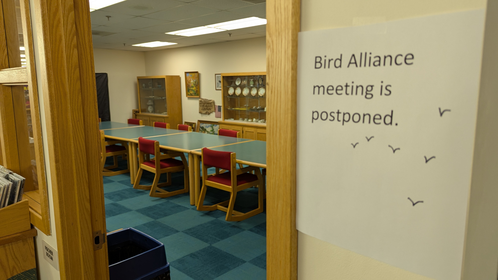
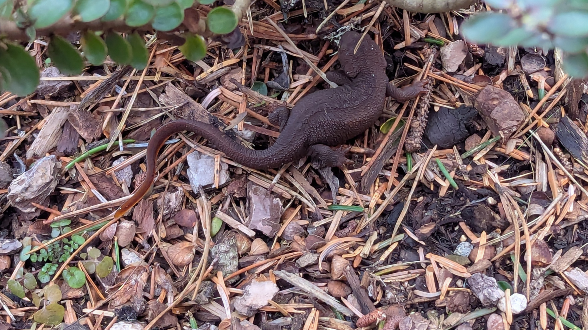

❄
Comet Atlas Caught in the Act of Disintegration
The nucleus of Comet ATLAS (C/2024 G3) held together during a brutal perihelion but not for long. Lionel Majzik of Hungary was the first to report and record dramatic changes in the comet between January 18th and 19th. The bright, strongly condensed head rapidly became more diffuse, a sure sign that its nucleus was disintegrating based on past observations of crumbling comets. His superb sequence, photographed remotely from Chile, clearly reveal the dramatic transformation, which was later confirmed by Australian observers.
Tamara Thomsen was 24 feet underwater when she spotted it: the decaying end of a dugout canoe, a great white oak carved some 1,200 years ago. It was jutting out of a sandy ridge in Wisconsin’s Lake Mendota—a body of water skirting Madison, the state capital—and she knew it was a remarkable find. “What I did not understand was the breadth of the discovery.”
How Does a Caterpillar Turn into a Butterfly?
To become a butterfly, a caterpillar first digests itself. But certain groups of cells survive, turning the soup into eyes, wings, antennae and other adult structures.
Why Americans Don’t Walk: A Forgotten Centennial
One hundred years ago, everyone walked in Los Angeles. Some people drove too, but the rules favored the walkers. A dense and extensive network of street railways made walking practical for most people. It was not the product of car culture, which was a nascent force. The public did not ask for it, and no referendum was held about it. Rather, it was the pet project of LA’s most successful car salesman: Paul G. Hoffman, the owner of America’s biggest Studebaker dealership. He hired a graduate student, Miller McClintock, to write it. And we don’t have to guess about Hoffman’s intentions, because he stated them himself. He commissioned the ordinance to sell more cars.
❄
The scientists reported using data from the MeerKAT radio telescope array in South Africa to track the slight changes in the timing of radio waves coming from more than 80 pulsars—rapidly spinning, ultra-dense neutron stars. As low-frequency gravitational waves drift by, the pulsars are nudged very slightly, altering the timing of their radio wave emissions by a tiny amount. Astronomers can then use the shifts in those signal times to infer the properties of the gravitational waves.
The passing gravitational waves “stretch or contract the universe by around 20 meters [about 65 feet] or so,” says Matthew Miles, an astrophysicist at Swinburne University of Technology in Australia and lead author on two of the papers.
Oklahoma Moms Locked Up for Their Abusers’ Violence Might Finally Get a Break
One mom was sentenced to 30 years in an Oklahoma prison because her abusive boyfriend broke her kids’ legs, and she wasn’t able to stop him. (He got two years in jail.) Another mom got 30 years in prison because her abuser beat her daughter. (He got 18 years.) And a jury recommended that a third mom go to prison for life because her boyfriend killed her toddler while she was away at work.
❄
It's Getting Boring by the Sea
❄
The moon, she follows me.
❄
Throwback: Walk it out Fosse / Mexican Breakfast Fosse
❄
This person walks down the bluffs to the ocean for a dip every day. Winter. Summer. Rain. Shine. In only a swimsuit.
❄
The birds. They are forming alliances.

❄
In this rare image taken on 19 July, the wide-angle camera on the international Cassini spacecraft has captured Saturn’s rings and our planet Earth and Moon in the same frame.
The dark side of Saturn, its bright limb, the main rings, the F ring, and the G and E rings are clearly seen; the limb of Saturn and the F ring are overexposed. The ‘breaks’ in the brightness of Saturn’s limb are due to the shadows of the rings on the globe of Saturn, preventing sunlight from shining through the atmosphere in those regions. The E and G rings have been brightened for better visibility.
Earth, 1.44 billion km away in this image, appears as a blue dot at centre right; the Moon can be seen as a fainter protrusion off its right side. The other bright dots nearby are stars.
This is only the third time ever that Earth has been imaged from the outer Solar System. The first image was taken by NASA’s Voyager-1 in 1990 and famously titled “Pale Blue Dot”. In 2006, Cassini imaged Earth in the stunning and unique mosaic of Saturn called “In Saturn's Shadow – The Pale Blue Dot”.
❄

❄
So Goddamn Good by Lords of Acid.
❄
Words Words Words Words starring Easy Reader and Valerie the Librarian
❄
caveat lector